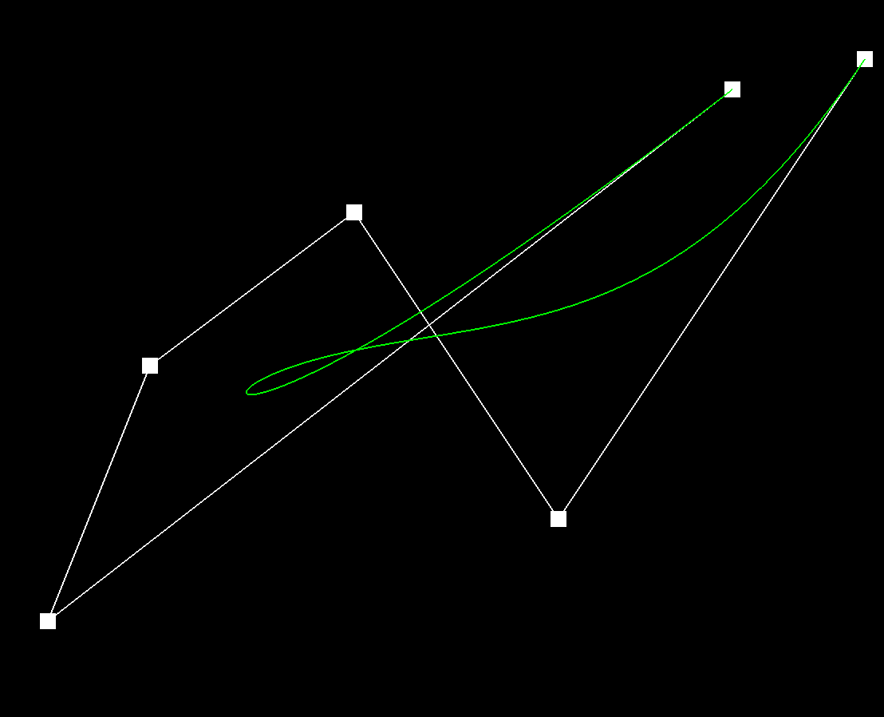
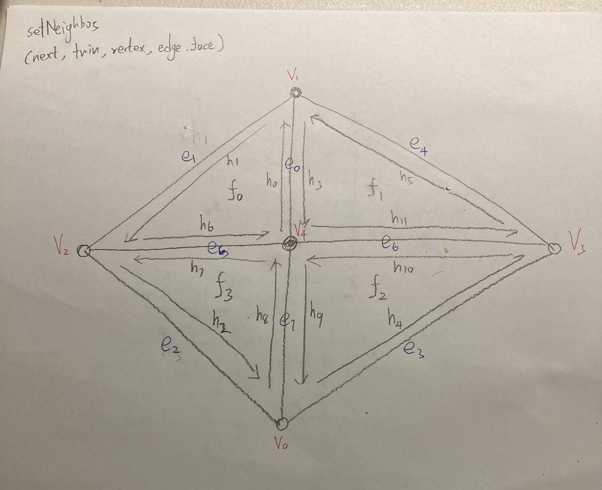

1st Step

2nd Step

3th Step

In this project, we explored how we could use Castelijau’s algorithm to evaluate Bezier curves, which could then be used to evaluate Bezier surfaces, and how to represent different meshies using the halfedge data structure with the vertex, face, edge iterators. Using Casteljau’s algorithm, we can recursively evaluate Bezier Curves. We can then apply this idea to find the given parameter (u, v) on Bezier surfaces. With halfedge data structures, we learned that we can traverse through the mesh like a linked-list. With the data structure in mind, we can perform operations to flip and split edges without messing up the original structure. Last, with the flip and split operations, we can perform loop subdivision to upgrade simple meshes to high resolution ones by splitting the triangles and flipping edges when supposed to.
Task 1:
Casteljau’s algorithm is an algorithm that recursively evaluates Bezier Curves. For each control point, the algorithm takes a point in between the point and the point after the point according to some t (linear interpolation). It recursively does the linear interpolation and gets a final point that lies on the Bezier surface according to the control points.

Task 2:
de Casteljau's algorithm can be applied multiple times to find the corresponding point on a Bézier surface p(u,v) given (u,v). First, I will use point u to evaluate the Bezier curves using the 1D Casteljau algorithm in u. Then with the control points of the Bezier curve, I can pass them into the 1D Casteljau again to evaluate the v.
Task 3:
Iterate through all the faces incident to the vertex. During each iteration, calculate the normal of each face by taking the cross product of two vectors (j-i and k-i respectively, where i is the vertex). After all the normals are collected, normalize it through .unit().
Task 4:
I started with only reassigning pointers for the half-edges, but it ended up resulting in black triangles when I tried to flip it. Then I tried including the edges by reassigning pointers of the edges that were moved. I was able to flip the edge once without bugging but when I tried flipping the same edge again it resulted in a black triangle. Finally I followed the spec’s advice of reassigning all the pointers for all the elements that the two triangles had involved. I tried to fetch/assign orders counterclockwise according to the face of the triangle to make sure I got the orders correct.
Task 5:
First, gather all the half edges, vertices, edges, and faces from the original triangle meshes. Then based on the new triangle meshes it will become, create new half edges, vertices, edges, and faces. After all the needed components are created, use setNeighbors() to set up all the half edges. Lastly, update all the vertices, edges, and faces with corresponding half edges.
Task 6:
The implementation that we did follows the 5 procedures given in Part 6. Step1: Compute the new position of all vertices using this formula ((1 - n * u) * original_position + u * original_neighbor_position_sum )) and store the new position in v->newPosition. Step2: Compute the updated vertex positions associated with edges using this formula (3/8 * (A + B) + 1/8 * (C + D)) and store the new position in e->newPosition. Step3: Split all the original edges and update the vertices to its new position that is previously stored in e->newPosition. Step4: flip any new edge that contains one old and one new vertex. Step5: update the vertices to new vertex positions. Interesting implementation: for step3, we cannot iterate through all the edges by simple for loop with edgeBegin() and edgeEnd(). We need to use a counter to count how many edges we iterate through, and only increment the counter when the edge is not new. This is because splitEdge() will create new edges that are not part of the original edges.